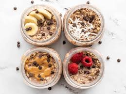
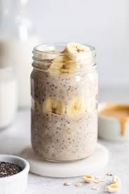

Over Night Oats

Why you will love them:
These Over Night Oats are prefect for anytime of the day!
Breakfast, brunch or lunch, these oats will fill
leave you up feeling satisfyed and energized!
Make these over night, or the morning of. Perfect for on the go.
What you will need:

Ingredients:
- 1/2 cup Dry oats
- 1/2 cup Cashew Milk
- 1 tbsp maple syrup
- 1 tsp Cinnamon
- 1 tsp chia seeds
- Optional: coca chips, seasonal fruits, yogurt
How to make them:
- Start by adding in your dry ingredients: oats, cinnamon, chia seeds and chips
- Next, add in your maple syrup and cashew milk.
- Give the oats a nice stir, cover and place in fridge
- in about 20 min, check on oats. add more milk if it looks too dry and if too wet, you can add chia seeds